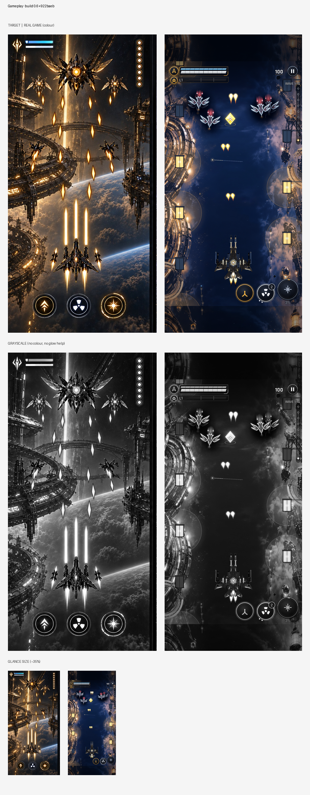
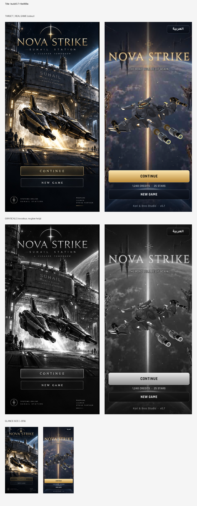
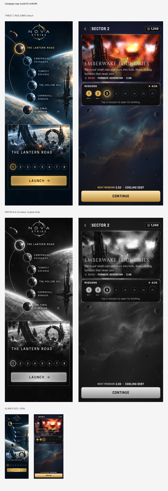
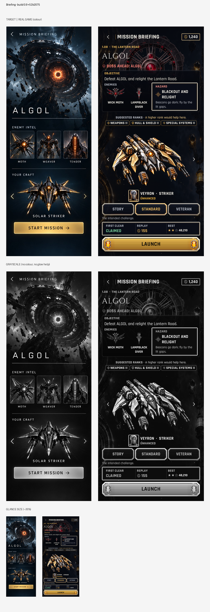
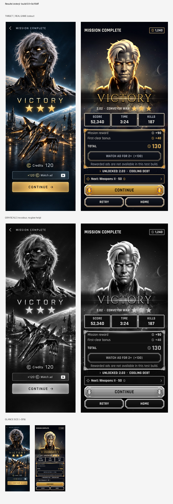
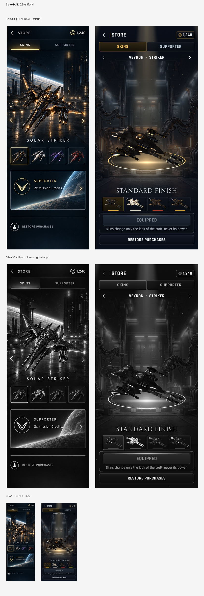
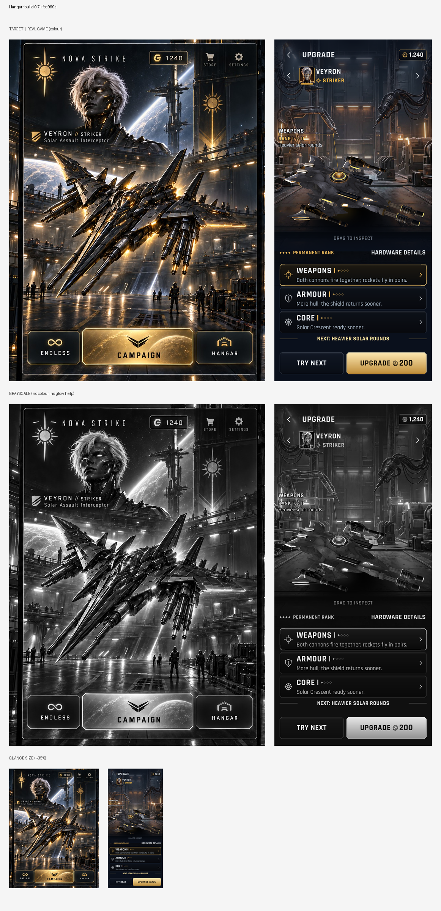
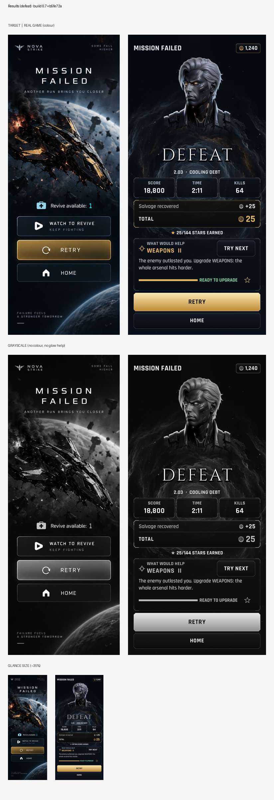
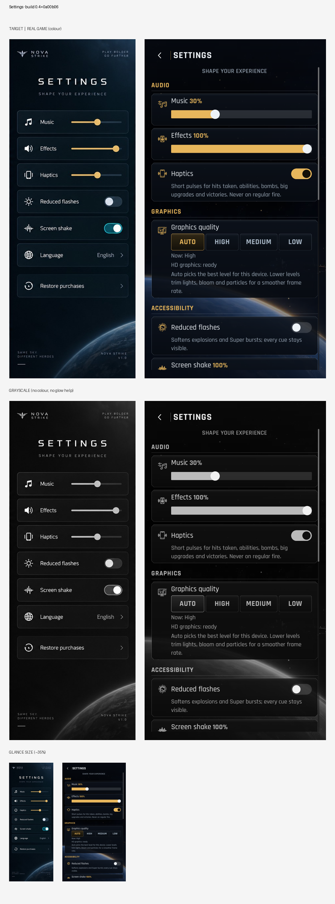

build.json · automated checks for build 0.8+94735e9
Automated: measured from 3 bot run(s) (event logs). Targets: config/build_checks.json feel.targets (+ studio defaults). It shows pacing and systems working; it does not show that a person finds it fun.
| Target | Threshold | Passing runs | Median |
|---|---|---|---|
| Empty screen time (share of play) | ≤ 0.1 | 3/3 ✅ | 0.02 |
| Longest empty gap (s) | ≤ 3.0 | 3/3 ✅ | 1.6 |
| Empty gaps over 2 s | ≤ 1 | 3/3 ✅ | 0 |
| Time to first power-up P2 (s) | ≤ 30.0 | 3/3 ✅ | 14.1 |
| Time at top power level (share) | ≥ 0.2 | 3/3 ✅ | 0.31 |
| Pickups collected (share) | ≥ 0.7 | 3/3 ✅ | 1.0 |
| Bot deaths | ≤ 0 | 3/3 ✅ | 0 |
| Mean enemies on screen | ≥ 2.0 | 3/3 ✅ | 2.72 |
| Run | Unit | Result | Play s | Empty % | Longest gap | Gaps>2s | → P2 s | Time at P1/P2/P3/P4 % | Pickups | Mean enemies | Supers | Fails |
|---|---|---|---|---|---|---|---|---|---|---|---|---|
| 1.01 | arcanist | victory | 98.7 | 2 | 1.2 | 0 | 14.1 | 14/18/36/31 | 100% | 3.71 | 4 | – |
| 1.05 | striker | victory | 110.8 | 1 | 1.6 | 0 | 14.3 | 13/18/29/40 | 100% | 2.72 | 3 | – |
| 2.01 | striker | victory | 86.4 | 2 | 1.7 | 0 | 14.0 | 16/26/32/26 | 100% | 2.44 | 3 | – |
Automated: each capture from this build beside its visual-bible target (sheets below), with measured differences. The numbers flag drift; they don't judge quality. Look at the sheets.
| # | Screen | Lightness (build / target) | Contrast | Colourfulness | Dark share | Highlights | Drift flags | Sheet |
|---|---|---|---|---|---|---|---|---|
| 1 | Gameplay | 27.0 / 26.5 | 25.2 / 21.2 | 15.7 / 12.0 | 0.56 / 0.48 | 0.04 / 0.03 | – | art_01.png |
| 2 | Title | 29.1 / 21.1 | 20.3 / 24.5 | 10.5 / 7.1 | 0.41 / 0.67 | 0.03 / 0.05 | – | art_02.png |
| 3 | Campaign map | 22.2 / 22.3 | 21.7 / 26.0 | 14.3 / 10.2 | 0.66 / 0.67 | 0.04 / 0.05 | – | art_03.png |
| 4 | Briefing | 13.4 / 16.6 | 20.8 / 20.8 | 7.9 / 8.6 | 0.84 / 0.76 | 0.03 / 0.03 | – | art_04.png |
| 5 | Results (victory) | 20.6 / 22.0 | 24.8 / 24.4 | 9.1 / 9.3 | 0.67 / 0.66 | 0.05 / 0.05 | – | art_05.png |
| 6 | Store | 15.2 / 15.0 | 14.4 / 20.2 | 5.6 / 6.8 | 0.75 / 0.79 | 0.01 / 0.03 | – | art_06.png |
| 7 | Hangar | 17.8 / 25.6 | 18.6 / 22.2 | 7.2 / 8.5 | 0.67 / 0.52 | 0.02 / 0.03 | – | art_07.png |
| 8 | Results (defeat) | 17.6 / 14.8 | 23.5 / 18.9 | 7.3 / 7.2 | 0.76 / 0.75 | 0.04 / 0.02 | – | art_08.png |
| 9 | Settings | 9.9 / 8.9 | 17.2 / 12.5 | 6.9 / 7.9 | 0.89 / 0.93 | 0.01 / 0.01 | – | art_09.png |
| Screen | Build | Target |
|---|---|---|
| Gameplay | #131b2f #050d1f #927a65 #2d3242 #5b4f4c #d5b489 | #131215 #504135 #765e4a #262220 #37291f #b9a080 |
| Title | #151924 #303039 #474851 #6c686e #232834 #bda783 | #2e2d2d #05070c #0b1017 #18181b #605c56 #bbb3a4 |
| Campaign map | #181a25 #302b32 #11131c #c9a176 #5b4646 #281a1e | #030d16 #202e39 #0b161e #616d71 #03121e #c7bea7 |
| Briefing | #0f121a #0a0e15 #252325 #080c15 #958468 #060911 | #040b12 #1b2128 #081119 #3d3f44 #111317 #9c927c |
| Results (victory) | #0c0f17 #121215 #2c2a2b #060912 #645c4f #cab17d | #2a2e31 #050e16 #0c141b #171718 #5e5e5d #c3b496 |
| Store | #0a0e16 #15171c #3a3836 #1d2229 #2b2928 #6b655a | #171d22 #050f17 #0b1117 #030b12 #373839 #908e89 |
| Hangar | #2d2c30 #090c12 #47403f #0c111c #18191d #8f7f68 | #0e0f10 #473f38 #2b2723 #706254 #1b1e20 #b8a48a |
| Results (defeat) | #0c1017 #070a10 #1f2229 #131821 #b5aa91 #46494f | #04090e #0a0e13 #0c171f #3a3d3f #1c2128 #81827e |
| Settings | #070b13 #0b1018 #131821 #03050a #090e17 #686050 | #08161e #0a1822 #030b13 #06111a #031018 #313f49 |
Target: every role pair ≥ 25.0.
| Roles | Closest pair ΔE | Result |
|---|---|---|
| enemy vs background | 6 | ⚠️ too close |
| enemy_bullets vs background | 50 | ✅ |
| enemy_bullets vs player_bullets | 27 | ✅ |
| enemy_bullets vs enemy | 36 | ✅ |
| player_bullets vs background | 42 | ✅ |








